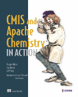

Apache Chemistry CMIS Code Samples
CMIS (Content Management Interoperability Services) is an OASIS standard enabling information sharing between different Content Management Systems.
This is a collection of code samples for
- Apache Chemistry OpenCMIS - a CMIS library for Java
- Apache Chemistry PortCMIS - a CMIS library for .Net
We assume that you have a rough understanding of CMIS. This is not a CMIS introduction course.
Many code samples are marked with CMIS 1.0 or CMIS 1.1. Those tags indicate the CMIS specification version that the server has to support to use the feature.
Throughout the code samples you will find references to sections in the CMIS 1.1 specification; tags like Spec 1.5. We recommend that you have the specification document ready to hand.
Under Development
This sample collection is under development. Some areas are only sparely covered or not covered at all, yet. Also some code samples lack a meaningful description. If you want help, please see the about page.
Apache Chemistry™
Apache Chemistry provides open source client and server implementations of CMIS 1.0 and CMIS 1.1 for multiple programming languages (Java, .Net, Python, PHP, Objective-C, JavaScript, …).
Do you want to know more about CMIS and Apache Chemistry?

The book CMIS and Apache Chemistry in Action is a comprehensive guide to the CMIS standard and related ECM concepts. In it, you’ll tackle hands-on examples for building applications on CMIS repositories from both the client and the server sides. You’ll find working examples using the Apache Chemistry APIs for Java, Python, C#, Objective-C, and PHP, but you can use the techniques you’ll learn in this book to work with CMIS repositories using any language that can speak HTTP - including JavaScript.
OpenCMIS
OpenCMIS is a CMIS client library and a CMIS server framework for Java. It also provides developer tools such as the CMIS Workbench and the InMemory Repository. OpenCMIS runs on servers, desktops, and Android.
The code samples in this documentation cover the OpenCMIS client API. If you want to build a CMIS server with OpenCMIS, refer to the OpenCMIS Server Development Guide.
To get started with OpenCMIS, download the OpenCMIS client libraries or use Maven or Gradle to get the client libraries.
Maven
Replace [OpenCMIS version] with the latest version number, e.g. 1.1.0.
<dependency>
<groupId>org.apache.chemistry.opencmis</groupId>
<artifactId>chemistry-opencmis-client-impl</artifactId>
<version>[OpenCMIS version]</version>
</dependency>
For Android:
<dependency>
<groupId>org.apache.chemistry.opencmis</groupId>
<artifactId>chemistry-opencmis-android-client</artifactId>
<version>[OpenCMIS version]</version>
</dependency>
Gradle
Replace [OpenCMIS version] with the latest version number, e.g. 1.1.0.
compile group: 'org.apache.chemistry.opencmis', name: 'chemistry-opencmis-client-impl', version: '[OpenCMIS version]'
For Android:
compile group: 'org.apache.chemistry.opencmis', name: 'chemistry-opencmis-android-client', version: '[OpenCMIS version]'
PortCMIS
PortCMIS is a CMIS client library for .Net. It is a Portable Class Library that runs on servers, desktops, and Windows Mobile.
To get started with PortCMIS, download the PortCMIS client binaries. You have the choice of either plain DLLs or NUPGK packages. It is also availabe on nuget:
PM> Install-Package PortCMIS
DotCMIS
DotCMIS is the predecessor of PortCMIS. The APIs are very similar and most of the PortCMIS samples should also work with DotCMIS.
The high-level differences between DotCMIS and PortCMIS are described on this page. For new projects it is recommend to use PortCMIS.